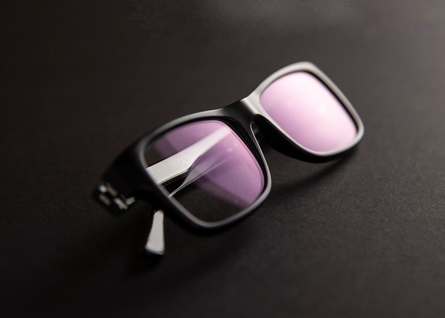

新闻 · 2026-11-24 18:00
荷兰数据保护局建议不购买 AI 摄像头眼镜：不仅易引发隐私问题，还有安全风险
荷兰数据保护局建议消费者勿购AI摄像头眼镜，因该设备易侵犯肖像权且存在严重安全风险。测试显示其AI幻觉问题严重，如误判救护车已到、错误解读药品说明及天气警告，甚至建议未成年人约会。同时设备数据流向不明，存在第三方非法连接漏洞。

来源与核验
单一信源报道，未交叉核实
荷兰数据保护局建议消费者勿购AI摄像头眼镜，因该设备易侵犯肖像权且存在严重安全风险。测试显示其AI幻觉问题严重，如误判救护车已到、错误解读药品说明及天气警告，甚至建议未成年人约会。同时设备数据流向不明，存在第三方非法连接漏洞。

单一信源报道，未交叉核实